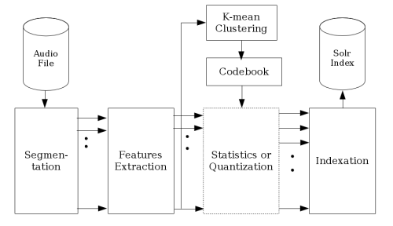
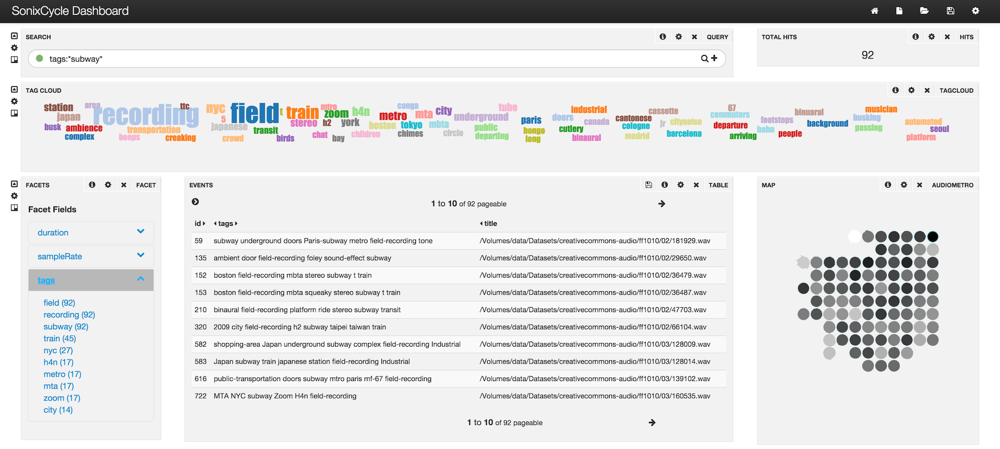

A classical sound designer workflow
You are a sound designer. Your every day work consists in adding Foley sounds to movies in post-production. You start your day in the morning by watching the video sequences you will focus on later today and you elaborate a clear idea in your head about the sounds you want to emphasize: the clapping noise of a man walking in the street, the urban uproar with its cars and klaxons, the friction of a woman searching her handbag,... On your hard drive are recorded terabytes of sounds with any kind of properties coming from libraries from studios all around the world. But your are looking for something too precise, too specific in term of rhythmic or timbral properties to start browsing with keywords those huge collections of which you don't know the classification. So, like every day, you spend your afternoon in the studio recording ninety percent of the Foley sounds you will use in this new movie.
Of course, there is no perfect solution search and browse sounds collections. In certain circumstances, semantic data can be the main property someone is interested in. Sometimes, he has specific requirements for noise, tempo, timbre, loudness, amplitude evolution. In this R&D work, we wanted to provide a tool that could index all those properties and manage queries combining several different fields together. A major constraint was to be easily scalable to collections of many terabytes and work efficiently in a REST server-client architecture.
Sonixcycle, a tool based on Solr search engine and indexing perceptual sound properties
To answer the constraints in scalability, deployment and speed, we started from an open source semantic search engine called Apache Solr. The idea was to find a way to adapt the tool to index perceptual audio properties but the main challenge was to take the time dimension into consideration without averaging over a full audio track. To do that, we started by segmenting the sound every 10ms where the audio properties could be assumed static. A series of features like MFCC or more high-level properties are then extracted and condensed into vectors. From there two options were imagined: for some features independent from the time evolution, statistics were computed and directly indexed in Solr; for the rest, the vectors were assembled in shingles of a few thousands of segments to keep a trace of the features' evolution on a short time level and those shingles were classified with an unsupervised hierarchical k-means clustering method running on the server GPU.
 An overall view of the Sonixcycle data flow for audio indexation.{kind=link}
In a browser, a sound designer could start with a semantic query which would hand back a subset of the most relevant results. Different widget in a graphical interface were used to classify this small subset on perceptual properties using algorithms like tSNE. Also, the user was now capable to select one or many timbral properties he wanted to retrieve and start a query in Solr on those indexed features. A custom cosine distance similarity measure in Solr was implemented to output a subset of the most similar sounds in regard to the selected perceptual properties in only a few milliseconds for a dataset of hundreds of gigabytes. A paper has been published with Christian Frisson, Alexis Moinet, Thierry Dutoit and myself during the AudioMostly conference in 2016.
 The Sonixcycle GUI allows the user to do semantic search (above) and visualize the results in a semantic list or classified by audio properties on a 2D grid. From the results list and map, he can also perform a perceptual research to target specific audio properties{kind=link}